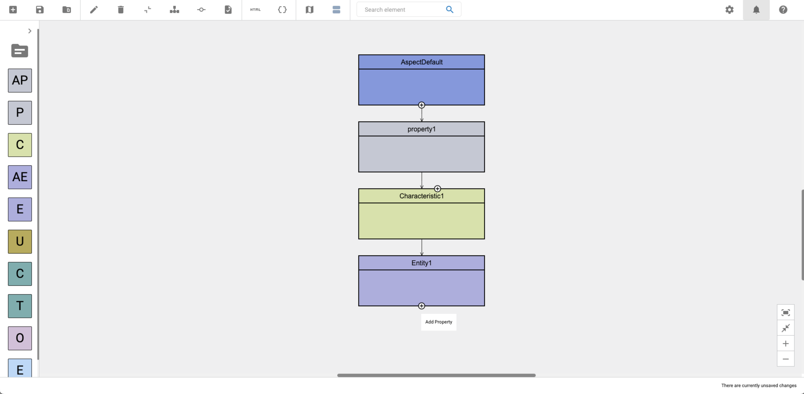
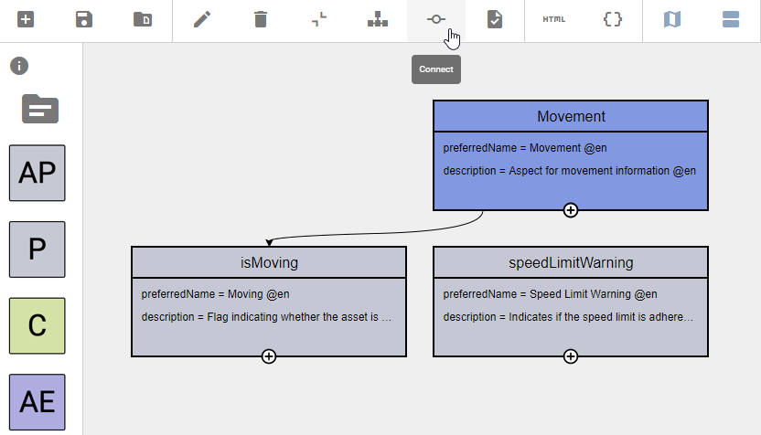
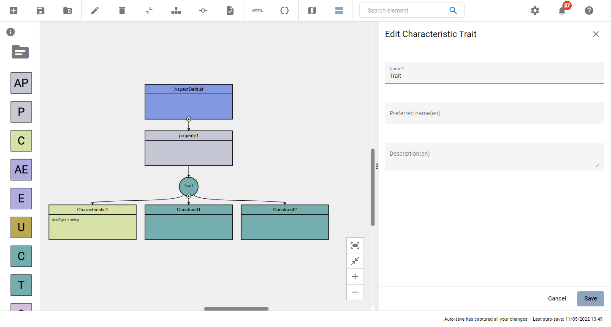
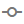
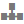

Edit models
An Aspect Model consists of different SAMM elements: one Aspect and several Properties, Operations, Characteristics, Constraints, Entities, or Events.
An Aspect is created by default when starting an Aspect Model. All other elements can then be added. Every element created in the editor can be modified.
| Elements that belong to other namespaces/files cannot be edited. |
The naming conventions for Aspect Model elements are defined in the Naming Rules (SAMM 2.0.0). The Aspect Model Editor guides you to follow all these SAMM naming conventions for your Aspect Models.
Work with the Workspace sidebar
-
To open a list of all the namespaces and files that are currently available, click the Workspace icon .
For more information, see Namespaces and external references.
-
The Workspace sidebar also offers all types of elements to drag and drop into your Aspect Model. From here you can add new Properties, Characteristics, Entities, Constraints, Operations, Events, and Traits by dragging an element from the sidebar to the diagram area.
Add elements
There are two different ways to add an element: * Use the Add icon * Use drag-and-drop from the Workspace sidebar
Use the Add icon
To add and connect the next logical element, click the Add icon at the bottom edge of any existing element.
-
After an Aspect a default Property will be added.
-
After a Property a default Characteristic will be added.
-
After a Characteristic a default Entity will be added.
-
After an Entity a default Property will be added.

| For Characteristics, you will also find an Add icon on the top to insert a Constraint between the Property and the Characteristic. |
Use drag-and-drop from the Workspace sidebar
Drag and drop one of the available elements from the Workspace sidebar. You have the option to create new elements or to use already existing elements from other namespaces.
| In order to prevent formatting issues, it is a best practices to always connect a new element with another element directly after adding it. See also known issues. |
Find elements
Use the search bar in the toolbar to find elements. By selecting an element it will be highlighted and centered in the diagram area.
Use the following advanced search possibilities for more specific search results:
=position |
SAMM elements that are named "position" |
*position |
SAMM elements that contain "position" in their name |
position$ |
SAMM elements where the name ends with "position" |
Connect elements
In some situations you might want to connect elements manually, e.g., when you want to reuse a Characteristic and connect a second Property to it.
To connect two elements manually, proceed as follows:
-
Click both elements while holding the CTRL key on your keyboard.
-
Click the Connect icon in the toolbar.

→ Both elements are now connected.
Use Traits
There are two ways of adding a Trait:
-
Drag and drop one from the Workspace sidebar
-
Click the top Add icon at a Characteristic
Clicking the top Add icon  of a Characteristic will add a new Trait, taking the Characteristic’s position and connecting the Trait to the initial Characteristic as well as a newly created Constraint.
In this scenario, the newly created Trait takes the name of the parent attribute as a prefix to its own name.
of a Characteristic will add a new Trait, taking the Characteristic’s position and connecting the Trait to the initial Characteristic as well as a newly created Constraint.
In this scenario, the newly created Trait takes the name of the parent attribute as a prefix to its own name.
A Trait has an Add icon on the bottom of the element, which is always visible:
-
When clicking the "Add" icon
, a Characteristic is created and connected to the Trait. -
If there is already a Characteristic connected to the Trait, each Trait Add icon
click will create a new Constraint and connect it to the Trait.
Trait Example
Try out the following example to learn how to connect two Properties to the same Characteristic with each Property having different Constraints.
For a new model that only has an Aspect so far:
-
Create two Properties by clicking twice on the Aspect’s Add icon
. -
For each Property create a Characteristic by clicking the top "Add" icon
of each Property. -
Click the top Add icon
of each Characteristic to create a Trait and a Constraint for each Property. -
Remove the second Characteristic.
-
Connect the second Trait with the first Characteristic:
-
Click the Trait,
-
Then CTRL+click the Abstract Entity and click the Connect icon  on the toolbar.
-
-
Click the Format icon .
→ As a result you have connected two Properties to the same Characteristic with each Property having different Constraints.
Use Abstract Entities
SAMM supports defining abstract elements (entities and properties) and the concept of inheritance in order to make semantic information reusable. The editor allows to create abstract entities and properties and to declare relationships to inheritance via "extends". See Abstract Entities for more information about abstract entities and properties.
There are two different ways to create an abstract entity:
-
Use drag-and-drop from the Workspace sidebar
-
By adjusting an Entity in the extends field
Use drag-and-drop from the Workspace sidebar To add an abstract entity, proceed as follows:
-
Open the Workspace sidebar
-
Drag the Abstract Entity element and drop it to the diagram area
Adjusting an Entity in the extends field
To select or create an abstract entity in the Edit field of an Entity, proceed as follows:
-
Double-click the entity or abstract entity that should derive from another entity.
-
Abstract entity can be created or selected in the "extends" field.
Abstract Entities Example
For a new model that only has an Aspect so far:
-
Create one Property by clicking twice on the Aspect’s Add icon
. -
Create one Characteristic by clicking the Add icon
. -
Create one Entity by clicking the bottom Add icon
. -
Drag and Drop an Abstract Entity from the sidebar.
-
Connect the Abstract Entity with the Entity:
-
Click the Entity,
-
Then CTRL+click the Abstract Entity,
-
Then click the Connect icon on the toolbar.
-
-
Click the Format icon .
→ As a result you have connected the Abstract Entity with the Entity.
Use Abstract Properties
There are two different ways to create an abstract property:
-
Use drag-and-drop from the Workspace sidebar
-
By clicking the add icon on an Abstract Entity
Use drag-and-drop from the Workspace sidebar
To add abstract property, proceed as follows:
-
Open the Workspace sidebar
-
Drag the abstract property element and drop it to the diagram area
Use add icon on abstract entity
To add and connect an abstract property with an abstract entity, click the Add icon at the bottom edge of the existing abstract entity:
Abstract Properties Example
When an Entity connects to an Abstract Entity with Abstract Properties, for each non-optional Abstract Property, a Property is created. Each Property created extends one Abstract Property and is connected to the Entity. The Property that inherits an Abstract Property gets the same name as the Abstract Property and inherits all field information from Abstract Property. Data from derived Property cannot be edited and is greyed out in the edit dialog.